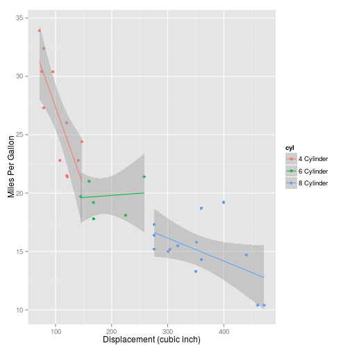

This tool can be used to visually explore different pairwise combinations of continous and categorical predictors for "mtcars" dataset
DataSciFi
This tool can be used to visually explore different pairwise combinations of continous and categorical predictors for "mtcars" dataset
Select one of the following continous predictors
Select one of the following categorical predictors
Sample plot for Displacement and Number of cylinders 